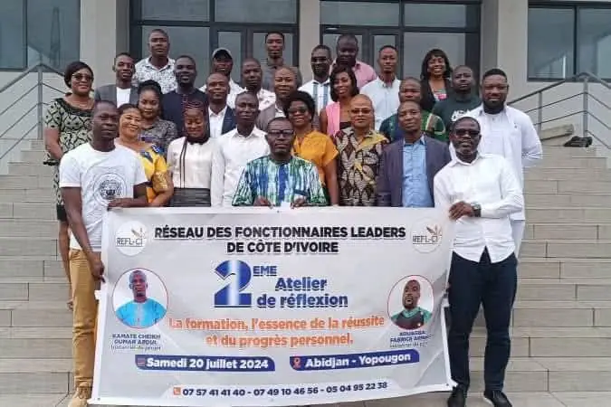

Accueil › Le Réseau
Le Réseau
Un réseau de fonctionnaires qui se forment, servent leur communauté, se rassemblent et célèbrent le mérite, au service d’une administration plus performante, plus éthique et plus proche des citoyens.
Répondre à des difficultés partagées par tous les agents publics
La Fonction publique ivoirienne regorge de femmes et d’hommes compétents, dévoués et engagés, formés dans les meilleures écoles et institutions du pays. Pourtant, dans l’exercice quotidien de leurs fonctions, de nombreux agents se heurtent à des difficultés profondes, récurrentes et transversales.
Ces difficultés relèvent moins des compétences techniques que des compétences comportementales, relationnelles et managériales : prise de parole, défense de ses idées, gestion des conflits, protocole, leadership, travail en équipe, confiance en soi. Elles sont peu prises en compte dans les formations classiques et pèsent sur la performance individuelle et collective.
Face à ce constat, des agents publics engagés ont créé le REFL-CI : un cadre structuré, apolitique et non syndical, articulé autour de quatre axes : former les agents, servir la communauté par des actions citoyennes, rassembler les fonctionnaires par le sport et la culture, et distinguer le mérite et l’exemplarité.

Faire du fonctionnaire ivoirien un leader transformateur, compétent, intègre et responsable
… capable d’impacter positivement son environnement professionnel et de contribuer efficacement au développement de la Nation.
Ce que nous visons
Objectif général : contribuer au renforcement des capacités des fonctionnaires, à leur engagement citoyen, à leur cohésion et à la reconnaissance de leur mérite, pour un service public plus performant.
- Développer le leadership, la communication et la prise de parole en public ;
- Améliorer la gestion des conflits et des relations professionnelles ;
- Renforcer la maîtrise du protocole administratif et institutionnel ;
- Promouvoir l’éthique, la discipline et la responsabilité.
- Renforcer l’engagement citoyen des fonctionnaires ;
- Encourager la solidarité envers les personnes vulnérables ;
- Promouvoir le respect du bien public et la protection de l’environnement.
- Renforcer la fraternité, la cohésion et l’esprit d’équipe entre agents de différentes administrations ;
- Favoriser le bien-être par le sport et la culture.
- Valoriser les talents, le mérite et l’exemplarité ;
- Célébrer chaque niveau franchi du parcours ;
- Mettre en lumière les fonctionnaires modèles.
Ce que nous faisons
- Nous formons4 sessions de formation par an et par région, dans un parcours en 5 niveaux, de membre à mentor.
- Nous servons3 actions citoyennes par an et par région : salubrité, solidarité, embellissement d’édifices publics.
- Nous rassemblonsUne journée sportive et culturelle dans chaque région, et une journée sportive nationale.
- Nous distinguonsLe dîner gala de remise de parchemin dans chaque région, et le dîner gala national du mérite et de l’excellence.
Leadership, intégrité, responsabilité, excellence
Chaque membre s’engage à respecter les statuts et le règlement intérieur, les orientations des instances, ces quatre valeurs, ainsi que le caractère apolitique et non syndical du réseau.
Leadership
Inspirer, fédérer et conduire les équipes vers les objectifs du service public.
Intégrité
Probité, discipline et respect des textes dans l’exercice de ses fonctions.
Responsabilité
Assumer ses engagements envers l’administration, les usagers et le réseau.
Excellence
Viser la qualité du service rendu et la performance durable.
De l’atelier de réflexion à la naissance officielle
Le REFL-CI est le fruit de près de trois années de réflexion, de travail sur ses textes et de mobilisation sur le terrain.
- 2023 · Yamoussoukro
1er atelier de réflexion
Des agents publics engagés se réunissent pour la première fois autour de l’idée d’un réseau dédié au leadership des fonctionnaires.
- 20 juillet 2024 · Abidjan-Yopougon
2e atelier de réflexion
« La formation, l’essence de la réussite et du progrès personnel » : les fondateurs posent les bases du réseau.
- Juillet 2024 – juillet 2025
Comité ad hoc
Un comité ad hoc est mis en place pour élaborer les textes fondateurs du réseau : statuts et règlement intérieur.
- 1er au 3 juillet 2025
Tournée nationale d’information
Rencontres avec les fonctionnaires à Issia, Guibéroua, Gagnoa, Lakota, Divo, Tiassalé, N’douci, Toumodi, Yamoussoukro, Bouaflé et Bonon.
- 20 février 2026 · Yamoussoukro
Assemblée générale constitutive et élective
Adoption des statuts et du règlement intérieur, élection des premiers responsables : le REFL-CI naît officiellement, en présence de représentants des autorités administratives et d’institutions partenaires.
- 6 avril 2026 · Yamoussoukro
Conseil de gestion élargi
Présentation officielle des membres des organes, clarification des missions et adoption des orientations du plan d’action 2026.
Dans l’administration publique
Renforcement du leadership administratif
Des fonctionnaires capables d’inspirer, de fédérer et de conduire leurs équipes.
Performance et culture du résultat
Une administration orientée vers l’efficacité et la satisfaction des usagers.
Éthique et intégrité
Probité, discipline, responsabilité et respect des textes.
Climat professionnel apaisé
Moins de conflits grâce à une meilleure communication et à l’esprit d’équipe.
Pratiques professionnalisées
Protocole, communication institutionnelle, gestion de projet, management public.
Mérite valorisé
Mettre en lumière les fonctionnaires modèles pour encourager l’émulation.
Réseau inter-administratif
Un cadre d’échanges entre ministères, directions et institutions.
Au niveau national
- Restauration de la confiance citoyenne envers l’État ;
- Contribution à la bonne gouvernance : responsabilité, transparence, redevabilité ;
- Renforcement du civisme et de l’engagement communautaire ;
- Contribution au développement durable par des initiatives sociales, environnementales et éducatives ;
- Émergence d’une nouvelle génération de leaders publics.
À long terme
- Une administration plus moderne, plus performante et plus humaine ;
- Des fonctionnaires confiants, compétents et exemplaires ;
- Une Nation portée par des leaders publics responsables ;
- Un service public aligné sur les standards d’excellence.
Chers membres, chers futurs membres,
Le Comité Exécutif National a une mission claire : faire vivre le réseau sur le terrain. Formations, actions citoyennes, activités sportives et culturelles, dîners gala : chaque région, à travers son comité exécutif, porte ce programme au plus près des fonctionnaires.
Notre ambition pour 2026-2027 est de rassembler 2 000 membres engagés. Pour l’atteindre, nous comptons sur chacun de vous, pour participer, mobiliser vos collègues et incarner au quotidien les valeurs de leadership, d’intégrité et de responsabilité qui nous unissent.
Ensemble, bâtissons une administration forte, portée par des leaders inspirants.
Adhérer au REFL-CI, c’est…
- Investir en soi
- Grandir professionnellement
- Servir la Nation avec excellence
- Devenir un leader public responsable
- Contribuer à son développement personnel
- Renforcer sa crédibilité professionnelle
- Participer à la transformation de l’administration
Devenez un leader public
Rejoignez un réseau qui forme, encadre et valorise les fonctionnaires engagés pour une administration plus performante.